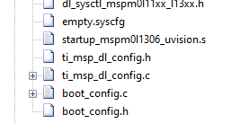
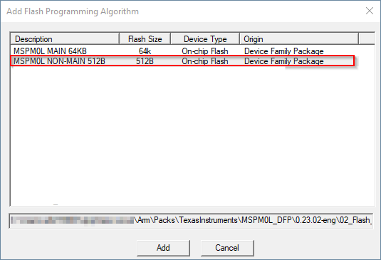

适用于 MSPM0 MCU 的 Arm Keil MDK IDE 5.38+ 版¶
目录¶
请先阅读¶
如何使用本指南¶
本指南仅说明软件开发环境的设置和基本操作， 但并未全面介绍 MSPM0 微控制器或完整的开发软件与硬件系统。 如需了解相关详细信息，请参阅 德州仪器 （TI） 相关文档部分中列出的相应 TI 和 Keil 文档。
本指南适用于 TI XDS-110、Arm ULINK 和 Segger J-Link 开发工具系列的使用。
这些工具包含封装时可用的最新材料。有关最新材料 （包括数据表、用户指南、软件和应用信息），请访问 TI MSPM0 网站或联系当地的 TI 销售办事处。
与注意事项有关的信息¶
本指南可能包含注意事项。
注意 - 这是注意事项语句的示例。 注意事项语句描述了一种可能对软件或者器件造成潜在损坏的情况。
请仔细阅读每条注意事项。
德州仪器 （TI） 提供的相关文档¶
MSPM0 开发工具文档：
MSPM0 器件文档：
如果您需要协助¶
请访问关于 MSPM0 MCU 的 E2E 社区支持论坛，与同行工程师、 TI 工程师和其他专家进行公开交流。更多器件特定信息可在 MSPM0 网站上找到。
1. 软件安装¶
Arm Keil MDK， 包括 µVision IDE、调试器和 Arm C/C++ 编译器，可从 Keil 网站获得。MSPM0 微控制器和 MSPM0 SDK 需要 Keil MDK 5.38 或更高版本。
要查找适合您 IDE 版本的 SDK，请参阅 MSPM0 SDK 文档。
2. 开发流程¶
本章说明了如何使用 Keil MDK 运行演示程序、开发应用软件以及如何进行调试。
2.1 概述¶
有关 Keil MDK 的文档非常广泛，可在 Keil MDK 页面上 或通过 IDE 中的“Help”选项卡在线获取。
2.2 从 MSPM0 SDK 创建 MSPM0 工程¶
请参阅适用于 Keil 的 MSPM0 SDK 快速入门指南，其中包含有关如何安装 MSPM0 SDK 以及在 Keil 中导入和编译 SDK 示例的说明。
2.3 从头开始创建工程¶
注意：不建议从头开始创建工程，因为从头开始创建工程不会 默认添加所有必要的器件支持文件。要从空白工程开始，TI 建议从 SDK 导入空 Driverlib 示例 工程。
2.4 将 SysConfig 与 Keil 配合使用¶
MSPM0 SDK 中的一些示例支持 SysConfig。SysConfig 是一个直观而全面的图形实用程序集合，用于配置引脚、外设、无线电、子系统和其他 组件。SysConfig 可助您直观地管理、发现和解决冲突，以便您有更多时间 创建差异化应用。
SysConfig 工具作为独立安装程序交付，可手动集成到 Keil 中，也可通过 dev.ti.com 云工具门户使用。
在 Keil 中启动 SysConfig 工程的最佳方式是从 SDK 将其导入；不过在首次启动时， 需执行一些步骤以在 Keil 中初始化 SysConfig。请参阅适用于 Keil 的 MSPM0 SDK 快速入门指南，详细了解如何安装 SysConfig 和为 Keil 启用 SysConfig。
有关如何将 SysConfig 与 MSPM0 配合使用的详细信息，请访问将 SysConfig 与 MSPM0 配合使用指南。
2.5 在 MSPM0 衍生产品之间进行迁移¶
通过 SysConfig，可以更轻松地在 MSPM0 衍生产品之间进行迁移；不过需进行一些手动修改。
在 SysConfig 中，启用器件视图并点击 SWITCH

选择新 MSPM0 器件的相应选项，然后点击 CONFIRM。

请注意，SysConfig 将突出显示与迁移的任何冲突，例如不可用的引脚和外设。 根据需要修复任何冲突。
在 Keil IDE 中，在工程选项中打开 Device 选项卡，然后选择新的 MSPM0 衍生产品。
依次选择 C/C++ (AC6) → Preprocessor Symbols → Define，更新器件定义。 根据所选器件添加器件定义。
在 Linker → Scatter File 中更新链接器文件。 MSPM0 SDK 在
<sdk>\source\ti\devices\msp\m0p\linker_files\keil包含所有 MSPM0 衍生产品的默认文件。
将新衍生产品的启动文件添加到工程，并删除现有启动文件。MSPM0 SDK 在
<sdk>\source\ti\devices\msp\m0p\startup_system_files\keil包含所有 MSPM0 衍生产品的默认文件。

解析任何其他依赖项，例如不兼容的库和源代码。
注意：未使用 SysConfig 时，步骤 1-3 不适用。
2.6 将新生成的 SysConfig 文件添加至工程¶
使用会生成除 ti_msp_dl_config.h 和 ti_msp_dl_config.c 以外的文件的 SysConfig 模块（如 NONMAIN 配置器）时，必须将新生成的文件手动添加至工程，因为 Keil 不会自动添加。要详细了解哪些模块会生成额外文件，请参阅将 SysConfig 与 MSPM0 配合使用指南。
以 NONMAIN 配置器为例，它将生成 2 个额外文件：boot_config.h 和 boot_config.c。

要将这些文件包括在编译工程中，请执行以下步骤：
添加 SysConfig 模块并保存所做更改后，导航回 Keil IDE 应显示一条消息，表明 .syscfg 文件已修改。点击 Yes 以重新加载文件。
右键点击工程，并选择 Rebuild all target files 以重新编译工程。Build Output 窗口将显示 SysConfig 已生成这些文件。


要添加额外新生成的文件（在本例中为
boot_config.h和boot_config.c），右键点击 Source 目录并选择 Add Existing Files to Group ‘Source’。
导航至示例工程根目录，选择需要添加的文件，然后点击 Add。

重新编译工程。这些文件应显示在 IDE 的工程 Source 目录中。

2.7 栈和堆管理及 .s 文件¶
可通过直接修改 .s 启动汇编文件来配置保留的栈和堆大小。有关此文件的完整说明，请参阅 Keil 文档。
可对提供的 .s 文件进行修改，以根据应用需求调整栈和堆大小；编辑 Stack_Size EQU xx 或 Heap_Size EQU xx 可为栈或堆分配 xx 个字节。
2.8 如何生成 Hex 文件¶
可将链接器配置为以 Intel Hex 格式输出对象，以与 MSP-GANG 和 UniFlash 等编程工具一起使用。
依次点击 Project → Options → Output → Create Hex File → Ok。
2.9 为 MSPM0 擦除 NONMAIN¶
注意：在擦除和编程 NONMAIN 时应特别小心。如果操作错误，器件将 锁定在永久不可恢复的状态。
依次点击 Options → Debug → Settings → Flash Download。
添加 NONMAIN 编程算法，然后点击“OK”。

2.10 覆盖预编译库¶
工程可能包括预编译库，可简化开发和编译过程；不过， 开发人员无法轻松修改源代码。
下面显示了此类库的一个示例 MSPM0 DriverLib。

覆盖库的一个选项是删除 driverlib.a，并直接向工程添加任何或所有源文件。 MSPM0 SDK 包括 empty_driverlib_src 示例，其中默认包括所有 DriverLib 源：
3. 调试应用程序¶
3.1 使用 TI XDS 工具¶
TI 提供各种适用于基于 Arm 的器件的调试探针，包括与 MSPM0 LaunchPad 集成的 XDS110。
注意：TI XDS110 调试器在本地受支持或通过 CMSIS DAP 受支持。TI XDS 本地支持需要 在默认文件夹 C:\ti\ccs-base 中单独安装 TI 仿真包软件。
要使用 XDS110 调试探针，右键点击活动工程，然后选择 Options for Target。 在“Target Options”窗口中，选择 Debug 窗格。在下拉菜单中，选择 CMSIS-DAP 调试器或 TI XDS 调试器。

注意所选仿真器。以上示例在 CSMSIS-DAP 模式下使用集成在 LaunchPad 中的 XDS110。
所选接口是 MSPM0 支持的 SWD。
XDS 工具使用闪存加载程序将代码下载到器件。在 Options → Debug → Settings → Flash Download 中确认使用。请参阅适用于 Keil 的 MSPM0 SDK 快速入门指南 ，了解更多详细信息。
3.2 使用 Segger J-Link 调试探针¶
要使用 J-Link，右键点击活动工程，然后选择 Options for Target。 在“Target Options”窗口中，选择 Debug 窗格。从下拉菜单中，选择 J-Link 调试器选项。

请参阅适用于 Keil 的 MSPM0 SDK 快速入门指南，以详细了解如何使用 Segger J-Link。
3.3 使用 Arm ULINK 调试适配器¶
要使用 ULINK，右键点击活动工程，然后选择 Options for Target。 在“Target Options”窗口中，选择 Debug 窗格。从下拉菜单中，选择 ULINK 调试器选项。
ULINK 工具使用闪存加载程序将代码下载到器件。在 Options → Debug → Settings → Flash Download 中确认使用。
3.4 断点类型¶
uVision 断点机制使用有限数量的片上调试资源（具体为 4 个硬件断点 和 2 个硬件观察点）。MSPM0 不支持软件断点。这意味着在 uVision 中最多可设置 4 个断点。
重置程序和“运行至光标”操作临时需要1个断点。因此，只有 3 个断点 可处于活动状态。
如果设置了断点最大数量，将显示以下警告。
4. 已知问题和常见问题解答 （FAQ）¶
低功耗调试模式在这些CMSIS软件包版本中是支持的。
设备支持包 |
版本 |
|---|---|
MSPM0L11XX_L13XX_DFP |
1.3.1+ |
MSPM0G1X0X_G3X0X_DFP |
1.3.1+ |
MSPM0C110X_DFP |
1.1.1+ |
MSPS003FX_DFP |
1.1.0+ |
MSPM0L122X_L222X_DFP |
1.1.0+ |
要启用旧版CMSIS软件包的支持，请执行以下步骤：
关闭Keil IDE。
将文件从MSPM0 SDK
C:\ti\<sdk>\tools\keil\low_power_mode_patch复制.pdsc并粘贴到：C:/Users/[user]/AppData/Local/Arm/Packs/TexasInstruments/[device]
通过使用这些文件修补Keil的安装，当设备进入低功耗状态时，应保持与调试器的连接。
请参阅 SDK 中的已知问题和 FAQ。